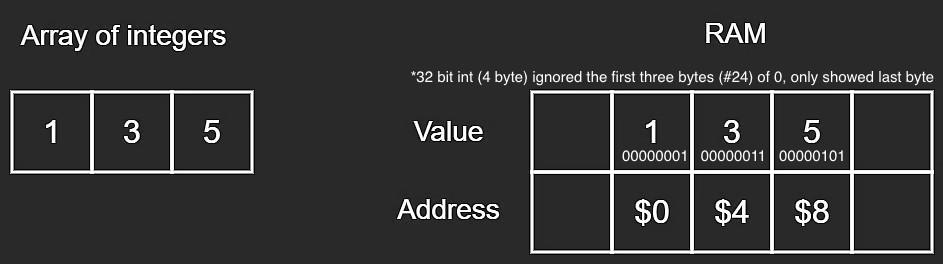
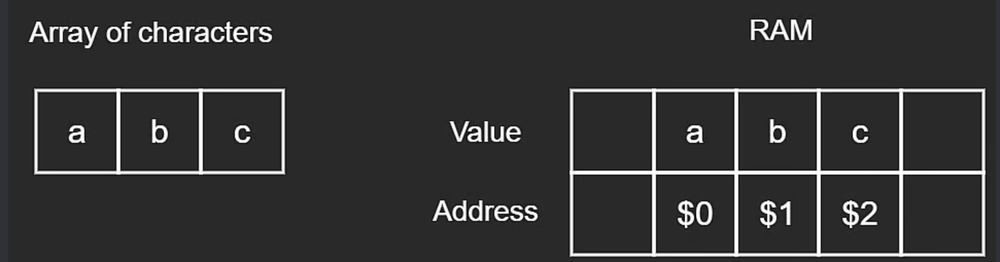
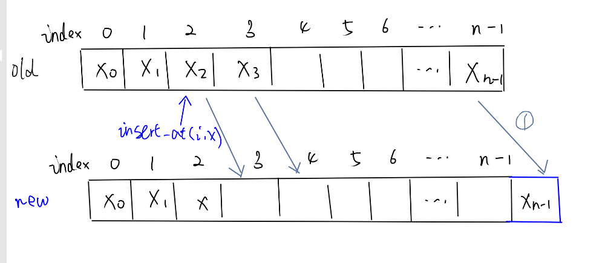
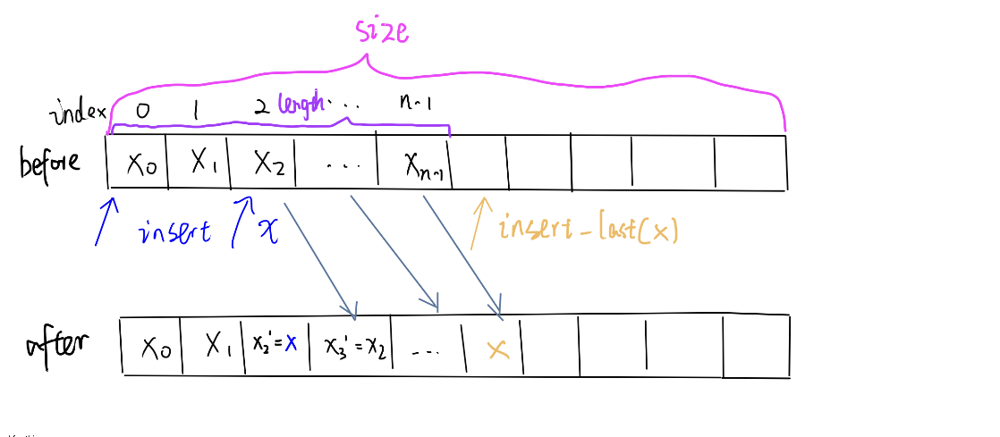
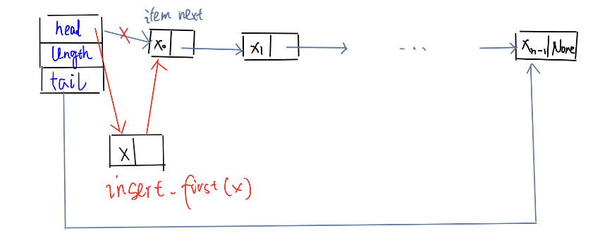
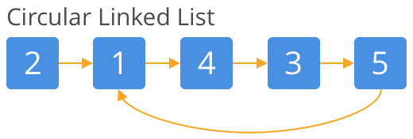
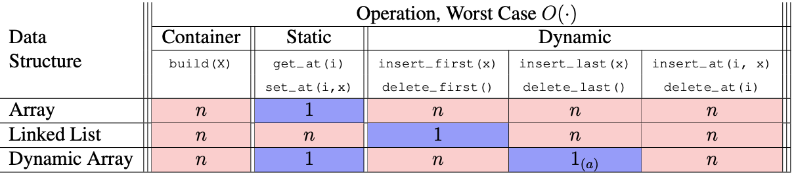

Data Structure¶
Course source: 6.006 Lecture 02
Interfaces vs Data Structures¶
| Aspects | Interface (API) | Data Structures |
|---|---|---|
| Definition | A collection of supported operations | a way to store non-constant data inside Random Access Memory(RAM), with algorithms that support a set of operations (called interface) on the data |
| Exposure Level | for users | under the hood |
| Key Difference | a specification: what data we can store and what operations are supported and what they mean (the problem) |
a representation: how to store data and how operations are supported by algorithms (the solution) |
Interfaces¶
| Types | Definition | Order |
|---|---|---|
| Sequence | Maintain a sequence of items, \(x_0, x_1, x_2, . . . , x_{n−1}\) (zero indexing) and use \(n\) to denote the number of items stored in the data structure | Extrinsic order to items (first, last, \(i\)-th) |
| Set | Maintain a set of items having unique keys (e.g., item x has key x.key) |
Intrinsic order to items (queries based on item keys) |
Sequence Interface¶
| Operation Category | Operation Explanation |
|---|---|
| Container | - build(X): given an iterable X, build new sequence from items in X - len(): return the number of stored items |
| Static not change length |
- iter_seq() : return the stored items one-by-one in sequence order - get_at(i): return the \(i^{th}\) item \(x_i\)- set_at(i, x): replace the \(i^{th}\) item \(x_i\) with x - get_first,get_last()- set_first(x),set_last(x) |
| Dynamic change length |
- insert_at(i, x): add \(x\) as the \(i^{th}\) item. If there is a value there at index \(x\), make \(x\) the new \(x_i\). - delete_at(i): remove and return the \(i^{th}\). - insert_first(x): add \(x\) as the first item. Shift all elements. - delete_first(): remove and return the first item - insert_last(x): add \(x\) as the last item. No shift. - delete_last(): remove and return the last item Note: use different operation interfacees at different index \(i\), first, last, because we can find more effient algorithms for insert_first(x) than insert_at(i, x) |
Special case¶
| Data Structure | Supported Operation | Features |
|---|---|---|
| stack | - insert_last(x) - delete_last() |
LIFO (Last In, First Out) elements added and removed from the same end |
| queue | - insert_last(x) - delete_first() |
FIFO (First in, First out). elements are added and removed from opposite ends. |
Sequence Data Structures: Static array vs Dynamic Array vs Linked List¶
| Aspect | Static Array (Fixed-Size) |
Dynamic Array | Linked List (Singly or Doubly) |
|---|---|---|---|
| Memory Layout | One contiguous block of memory. All elements stored sequentially. | Contiguous block of memory at any given time. (same as static array) |
All elements are stored in nodes, scattered in arbitrary order in different locations of memory (Non-contiguous). - Singly linked list: Each node (defined by a custom class) stores not only an item value node.item but also a pointer node.next (reference to the next node, store its memory address rather than the entire node itself). * We can chain .next.* The final node's next pointer is null ( None in Python; nullptr in C++). - Doubly linked list: store extra pointer node.prev to the previous node. |
| Build Memory Allocation | allocate memory for array with exact size \(n\) in \(\color{blue}\Theta(n)\) time, \(\text{space} = O(\text{time})\) | Allocate extra space \(\text{size} = \Theta(n) > n\) so reallocation does not occur with every dynamic operation, only occur sometimes | allocate memory for array size \(n\) |
| Size Management | 👎 Must declare fixed size and type when initialized in advance. - Everytime when the array is full, it can not store additional elements and have to reallocate a brand new array and copy values because the next word in memory might be already occupied by something else. |
👍 Resize as needed - allocate a new block of memory (the exact growth factor is implementation-dependent, simplication: double the size, i.e., full ratio \(r=1/2\)), then copy data and deallocate the previous memory block automatically. - When deleting from the tail, reduce size by allocating smaller memory (still maintain the full ratio and have extra space) and copy items |
👍 Number of nodes can grow or shrink arbitrarily. - Each insertion simply allocates a new node (array of size \(2\) in memory) - size is only limited by available memory. |
| Space Usage | Exact Fixed amount of contiguous memory allocated for the declared size. | - May over-allocate extra unused capacity to allow future growth. - Fixed size under the hood - still need resize - In Python, list stores pointers to objects rather than objects themselves (objects themselves are separate Python objects); In C++, std::vector<T> stores objects themselves. |
- Each node requires pointer overhead for next (doubly linked list also needs prev plus possible allocator/object overhead.- No need for contiguous space. |
| Check Length | \(\color{blue}O(1)\) | ||
| Read/Set an element | 👍 Fast random access arr[i] in \(\color{blue}O(1)\) because elements (or pointers to elements) are contiguous so the location can be calculated: array[i] = memory[address(array) + i] |
👍 Fast random access arr[i] in \(\color{blue}O(1)\) (same as static array). |
- 👎 No random access via direct indexing: to get the \(i\)-th element, must traverse from the head or tail in \(\color{blue}O(n)\). - 👍 Fast access at head: in \(\color{blue}O(1)\) because we already have a pointer to the first node (head node). - 👍 Fast access at tail: in \(\color{blue}O(1)\) if we have a pointer to the tail node. |
| Traverse Sequence (iterate all values) | \(\color{blue}O(n)\) | \(\color{blue}O(n)\) by reassiging curr_node.next |
|
| Insert / delete | - 👎 Slow insert at random \(i\)-th index in \(\color{blue}O(n)\) if the length < allocated capacity because it requires shifting each element afterwards 1 position to the right, then insert. - 👎 Insert at end *case 1. in \(\color{blue}O(1)\) if the length < allocated capacity *case 2. in \(\color{blue}O(n)\) if length = allocated capacity because it cannot expand in place and must reallocate a new array and copys all values. - Delete from end in \(\color{blue}O(1)\): set arr[n-1] = default.- 👎 Delete at front or at random i-th index in \(\color{blue}O(n)\): shift each element afterwards 1 position to the left. |
- 👍 Insert at end is amortized \(\color{blue}O(1)\) (the average time taken per operation over a sequence of operations). - 👎 Insert/Delete at random \(i-th\) index in \(\color{blue}O(n)\) requires shifting each element. - 👍 Delete at the end in \(\color{blue}O(1)\) |
- 👍 Fast insert/delete at head: in \(\color{blue}O(1)\) because we have head pointer and can simply manipulate nodes by relinking pointers. - 👍 Fast insert at tail in \(\color{blue}O(1)\) if we have tail pointer (without traversing). - 👍 Fast delete at tail in \(\color{blue}O(1)\) if we have tail pointer and node.prev pointer (Doubly linked list). - 👎 Slow insert/delete at random \(i\)-th middle node in \(\color{blue}O(n)\) because we need to loop over items to find the reference to that node; if we already have reference to that specific node, then it becomes \(\color{blue}O(1)\) |
| Implementation Examples | - C++ std::array<int, N> |
- C++ std::vector<T> (Must specify data type)- Python built-in list [] (no need to specify data type and can contain multiple types at once) |
- C++ std::list, std::forward_list- Custom linked-list classes in Python or other languages. |
| When to use | - When size is known in advance and won’t change. - Need fast random access. - Do not need any dynamic operations |
- Need fast random access - Need frequent appends at the end, but still need growth beyond the initial size. |
- Frequent insertions and deletions at the head or tail node. - Do not need fast random access. |
Static Array¶
Memory addresses are apart with element size.
Example: Figure: Array of Integers (a 32-bit int = 4 bytes, where 1 byte = 8 bits)

Figure: Array of Characters (a character = 1 byte, where 1 byte = 8 bits)

If there are elements after index \(i\), have to shift all the elements after index \(i\):
insert_at(i, x): \(x_i \rightarrow x_{i+1} \rightarrow x_{i+2} ...\rightarrow x_{n-1}\rightarrow x_{n}\)delete_at(i): \(x_i \leftarrow x_{i+1} \leftarrow x_{i+2}... x_{n-2}\leftarrow x_{n-1}\)
Figure: Static Array - insert: shift all items after the modified item

Dynamic Array¶
Figure: Dynamic Array - insert: shift all items after the modified item

Linked List¶
Figure: Linked List - insert :manipulating nodes by relinking

Figure: Circular Linked List - ‼️ Avoid cycle (there is some node in the list that can be reached again by continuously following the next pointer)

Amortized Analysis¶
| Aspects | Meaning | Details |
|---|---|---|
| Definition | Data structure analysis technique : cost of the operation is amortized (averaged/ distributed) over the operation sequence | Operation has amortized cost \(T(n)\) if \(k\) operations cost at most \(≤ kT(n)\) |
| Example | Inserting into a dynamic array takes \(\Theta(1)\) amortized time | Insert at last position, resize at \(n=1,2,4,8,16,…,2^i\) |
| Proof | \(\begin{aligned} \text{resized cost} &= \Theta(2^0 + 2^1 + 2^2 + ...+ 2^i) \\ &= \Theta(\sum_{i=0}^{\log n}2^i)\\ &= 2^{\log n} \\ &=\Theta(n) \space \text{in total} \\&= \Theta(1) \space\text{amortized}\end{aligned}\) | when \(\begin{aligned}n &= 2^i\\\log n &=i\end{aligned}\) Geometric series (grow at least exponentially) are dominated by the last item: \(\sum_{i=0}^{k}2^i = 2^{k+1}-1\) |
Summary¶
Table: Big O summary

\(_{(a)}\) means amortized.
String¶
String - Python vs C++¶
| Feature / Operation | Python str |
C++ std::string |
|---|---|---|
| Mutability | Immutable (can read by indexing, but cannot modify in place) |
Mutable (can modify in place, e.g., s[i] = 'd') |
| Memory layout | Implementation-dependent | Contiguous character storage |
| Read | \(\color{blue}O(1)\) | |
| Traversal | \(\color{blue}O(n)\) | |
| Get length | \(\color{blue}O(1)\) | |
| Slicing / Substring | O(k) to create a substring of length k | O(k) to create a substring of length k |
Concatenation (s1 + s2) |
O(n + m) | O(n + m) in the general case |
| Append one character | O(n) to create a new string | Amortized O(1); worst-case O(n) |
| Set at random position \(i\) | \(\color{blue}O(n)\) to create a new string | \(\color{blue}O(1)\) in place |
| Insert / delete | at random position/at end \(\color{blue}O(n)\) because have to create a new string | |
| Search for a character | \(\color{blue}O(n)\) | |
| Search for a substring | O(n) typical for single-character search; substring search depends on algorithm | O(n) typical; substring search depends on algorithm |
| Compare two strings | O(min(n, m)) worst-case when a difference is found late or strings share a long prefix; O(n) if equal length n | O(min(n, m)) worst-case when a difference is found late or strings share a long prefix; O(n) if equal length n |
| Bounds checking | s[i] raises IndexError if out of range |
s[i] does not guarantee bounds checking; s.at(i) checks and throws std::out_of_range |
| When to use | Text processing; safe sharing because strings cannot be modified in place | Text processing when in-place modification and mutable character sequences are useful |